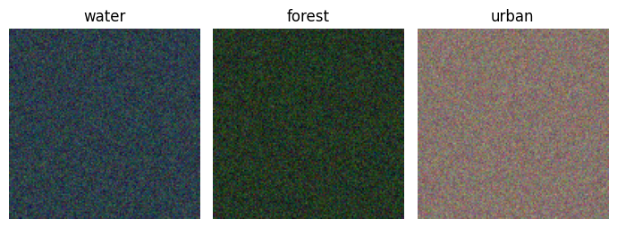
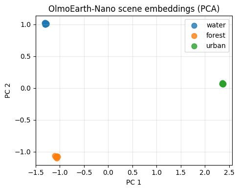
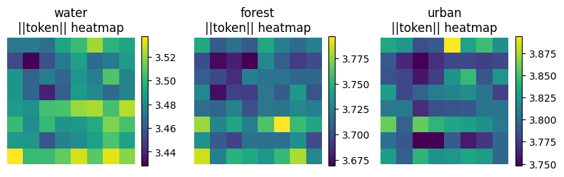

# !pip install --quiet olmoearth-pretrainOlmoEarth v1.1: a small runnable demo
On May 19, 2026, Ai2 released OlmoEarth v1.1 — a minor-version refresh of the OlmoEarth Earth observation foundation model family they first shipped in November 2025. This post is a short, runnable explainer:
- what OlmoEarth v1.1 actually changes,
- how to load the smallest model on a laptop in ~1 second,
- one simple application: embedding synthetic Sentinel-2 chips and doing nearest-neighbour land-cover classification.
No GPU, no API keys, no Sentinel-2 download. Synthetic chips with realistic per-band reflectance statistics are enough to show the embeddings are doing something.
What v1.1 changes
OlmoEarth v1 was a vision transformer pre-trained on ~10 TB of multimodal Earth observation data globally resampled to 10 m/pixel, with up to 12 monthly timesteps per sample. It ingests Sentinel-2, Sentinel-1, and Landsat as satellite modalities, plus map products (OpenStreetMap, ESA WorldCover, USDA Cropland Data Layer, SRTM DEM, WRI Canopy Height, WorldCereal) as weak supervision.
Four sizes: Nano (~1.4 M), Tiny (~6.2 M), Base (~90 M), Large (~300 M). The Base model already beat DINOv3, Prithvi (NASA/IBM), and AlphaEarth Foundations (Google DeepMind) on the OlmoEarth-Bench k-NN and linear-probe protocols.
The v1.1 delta is purely methodological: same data, smarter tokeniser.
- v1 emitted 6 tokens per spatial patch per timestep for Sentinel-2 (one per resolution group of bands).
- v1.1 emits 2 tokens per spatial patch per timestep by merging resolution groups into a single token after a small per-resolution projection.
- Naive merging causes a ~10 percentage-point drop on downstream tasks. The fix is a modified pre-training objective that explicitly stabilises the merged token.
- Net effect: ~3× cheaper inference and shorter sequences, same downstream quality.
On a country-scale crop map of India, the difference between 6 tokens and 2 tokens per patch is the difference between a job that fits on one node overnight and one that doesn’t.
Install
The official package is olmoearth-pretrain. The inference-only path doesn’t need olmo-core.
import time
import warnings
warnings.filterwarnings("ignore")
import numpy as np
import torch
import matplotlib.pyplot as plt
from olmoearth_pretrain.model_loader import load_model_from_id, ModelID
from olmoearth_pretrain.datatypes import MaskedOlmoEarthSample, MaskValue
torch.manual_seed(0)
np.random.seed(0)
print("torch:", torch.__version__)torch: 2.7.1Load OlmoEarth-v1-Nano
Nano is ~3.5 M parameters in the published checkpoint. On a MacBook this loads in about a second after the first download caches the weights in ~/.cache/huggingface/.
t0 = time.time()
model = load_model_from_id(ModelID.OLMOEARTH_V1_NANO).eval()
n_params = sum(p.numel() for p in model.parameters())
print(f"loaded in {time.time() - t0:.1f}s")
print(f"parameters: {n_params/1e6:.2f} M")loaded in 1.3s
parameters: 3.55 MSynthetic Sentinel-2 chips with realistic per-band statistics
OlmoEarth’s Sentinel-2 L2A input has 12 bands in this order:
B02, B03, B04, B08, B05, B06, B07, B8A, B11, B12, B01, B09
Instead of pulling a real Sentinel-2 scene, we synthesise three small classes of 128×128 chip by sampling Gaussian noise around literature-typical per-band reflectance vectors:
- water: very low NIR/SWIR, modest visible blue/green,
- forest: high NIR (B08, B8A), high red-edge (B05-B07), low visible red,
- urban: flat-ish across the spectrum, high SWIR (B11, B12).
If OlmoEarth’s representation is sensible, the embeddings of these chips should cluster by class. That is exactly what a real downstream user is hoping for when they reach for a frozen encoder.
# Order matches SENTINEL2_L2A band_sets in olmoearth_pretrain.
# 10 m: B02, B03, B04, B08 20 m: B05, B06, B07, B8A, B11, B12 60 m: B01, B09
BAND_NAMES = ["B02", "B03", "B04", "B08", "B05", "B06", "B07", "B8A", "B11", "B12", "B01", "B09"]
MEAN_BY_CLASS = {
"water": np.array([0.08, 0.07, 0.05, 0.02, 0.04, 0.02, 0.02, 0.02, 0.01, 0.01, 0.10, 0.05]),
"forest": np.array([0.04, 0.06, 0.04, 0.35, 0.10, 0.25, 0.30, 0.35, 0.20, 0.10, 0.06, 0.03]),
"urban": np.array([0.12, 0.13, 0.15, 0.18, 0.14, 0.18, 0.20, 0.20, 0.25, 0.22, 0.15, 0.07]),
}
CLASSES = list(MEAN_BY_CLASS.keys())
def make_chip(cls: str, h: int = 128, w: int = 128, noise: float = 0.02) -> np.ndarray:
mean = MEAN_BY_CLASS[cls]
chip = mean[None, None, :] + np.random.randn(h, w, 12) * noise
return np.clip(chip, 0, 1).astype("float32")
N_PER_CLASS = 10
labels = np.array([i for i, _ in enumerate(CLASSES) for _ in range(N_PER_CLASS)])
chips = np.stack([make_chip(CLASSES[lbl]) for lbl in labels]) # (N, H, W, 12)
print("chip batch shape:", chips.shape, "labels:", labels[:5], "...")chip batch shape: (30, 128, 128, 12) labels: [0 0 0 0 0] ...# Preview one chip per class as a true-colour composite (B04 red, B03 green, B02 blue).
fig, axes = plt.subplots(1, 3, figsize=(7, 2.5))
for ax, cls in zip(axes, CLASSES):
chip = make_chip(cls)
rgb = np.stack([chip[:, :, 2], chip[:, :, 1], chip[:, :, 0]], axis=-1) # B04, B03, B02
rgb = np.clip(rgb * 3.5, 0, 1) # display stretch
ax.imshow(rgb)
ax.set_title(cls)
ax.axis("off")
plt.tight_layout()
plt.show()
Embed the batch with OlmoEarth-v1-Nano
OlmoEarth’s expected input is a MaskedOlmoEarthSample:
sentinel2_l2a:(B, H, W, T, num_bands=12)reflectance in[0, 1].sentinel2_l2a_mask:(B, H, W, T, num_band_sets=3)— one mask entry per band-set (10 m / 20 m / 60 m). We useMaskValue.ONLINE_ENCODEReverywhere because we are doing inference, not pre-training.timestamps:(B, T, 3)long tensor of[day, month_zero_indexed, year].latlon:(B, 2)float tensor.
The encoder returns two useful things:
tokens_and_masks.sentinel2_l2aof shape(B, h_patches, w_patches, T, num_band_sets, D)— per-patch, per-band-set tokens. For Nano withpatch_size=16and a 128×128 chip that’s(B, 8, 8, 1, 3, 128).project_aggregatedof shape(B, D)— a single scene embedding per chip. This is what we’ll feed to k-NN.
def build_masked_sample(chip_batch: np.ndarray, lat: float = 28.6, lon: float = 77.2,
day: int = 15, month_zero_indexed: int = 10, year: int = 2024):
"""Wrap a (B, H, W, 12) chip batch into a MaskedOlmoEarthSample."""
B, H, W, _ = chip_batch.shape
s2 = torch.from_numpy(chip_batch[:, :, :, None, :]) # add T=1
s2_mask = torch.full((B, H, W, 1, 3), float(MaskValue.ONLINE_ENCODER.value))
latlon = torch.tensor([[lat, lon]] * B).float()
latlon_mask = torch.full((B, 2), float(MaskValue.ONLINE_ENCODER.value))
ts = torch.tensor([[[day, month_zero_indexed, year]]] * B).long()
return MaskedOlmoEarthSample(
timestamps=ts,
sentinel2_l2a=s2,
sentinel2_l2a_mask=s2_mask,
latlon=latlon,
latlon_mask=latlon_mask,
)
masked = build_masked_sample(chips)
t0 = time.time()
with torch.no_grad():
out = model.encoder(masked, patch_size=16)
scene_emb = out["project_aggregated"].cpu().numpy() # (N, 128)
patch_tokens = out["tokens_and_masks"].sentinel2_l2a # (N, 8, 8, 1, 3, 128)
print(f"forward pass: {time.time() - t0:.2f}s")
print("scene embedding shape:", scene_emb.shape)
print("per-patch token shape:", tuple(patch_tokens.shape))forward pass: 0.10s
scene embedding shape: (30, 128)
per-patch token shape: (30, 8, 8, 1, 3, 128)Do the embeddings cluster by class?
Project the 128-dim scene embeddings into 2D with PCA and colour by class. If OlmoEarth’s representation respects spectral structure, the three clouds should separate cleanly.
from sklearn.decomposition import PCA
pcs = PCA(n_components=2).fit_transform(scene_emb)
fig, ax = plt.subplots(figsize=(5, 4))
for i, cls in enumerate(CLASSES):
m = labels == i
ax.scatter(pcs[m, 0], pcs[m, 1], label=cls, s=60, alpha=0.8)
ax.legend()
ax.set_xlabel("PC 1")
ax.set_ylabel("PC 2")
ax.set_title("OlmoEarth-Nano scene embeddings (PCA)")
ax.grid(alpha=0.3)
plt.tight_layout()
plt.show()
Application 1 — 5-NN scene classification
This is the cheapest evaluation Ai2 themselves run (k-NN on frozen embeddings, no fine-tuning). With 30 chips split 60/40 it should be trivial on this synthetic task; the point is the protocol.
from sklearn.model_selection import train_test_split
from sklearn.neighbors import KNeighborsClassifier
from sklearn.metrics import accuracy_score, confusion_matrix
X_tr, X_te, y_tr, y_te = train_test_split(
scene_emb, labels, test_size=0.4, random_state=0, stratify=labels
)
knn = KNeighborsClassifier(n_neighbors=5).fit(X_tr, y_tr)
y_pred = knn.predict(X_te)
print(f"n_train = {len(X_tr)} n_test = {len(X_te)}")
print(f"5-NN accuracy: {accuracy_score(y_te, y_pred):.3f}")
print()
print("confusion matrix (rows=true, cols=pred):")
print(" " + " ".join(f"{c:>7}" for c in CLASSES))
cm = confusion_matrix(y_te, y_pred, labels=list(range(len(CLASSES))))
for i, c in enumerate(CLASSES):
print(f" {c:>8} " + " ".join(f"{v:>7d}" for v in cm[i]))n_train = 18 n_test = 12
5-NN accuracy: 1.000
confusion matrix (rows=true, cols=pred):
water forest urban
water 4 0 0
forest 0 4 0
urban 0 0 4Application 2 — per-patch token norms
OlmoEarth doesn’t just produce a single scene embedding; it produces tokens for every (patch, band-set, timestep) triple. A quick sanity check: take the L2 norm of each patch token (averaged across band-sets) and plot it as an 8×8 heatmap over the chip.
On synthetic chips this should be roughly uniform (no spatial structure). On a real Sentinel-2 chip the same code would surface things like field boundaries and roads — exactly the signal you’d want for downstream segmentation.
# patch_tokens: (N, 8, 8, T=1, num_band_sets=3, D=128)
token_norms = patch_tokens.float().norm(dim=-1).mean(dim=(3, 4)).cpu().numpy() # (N, 8, 8)
fig, axes = plt.subplots(1, 3, figsize=(8, 2.8))
for ax, cls in zip(axes, CLASSES):
idx = int(np.where(labels == CLASSES.index(cls))[0][0])
im = ax.imshow(token_norms[idx], cmap="viridis")
ax.set_title(f"{cls}\n||token|| heatmap")
ax.axis("off")
plt.colorbar(im, ax=ax, fraction=0.046)
plt.tight_layout()
plt.show()
print("per-class mean token norm:")
for i, cls in enumerate(CLASSES):
print(f" {cls:>8}: {token_norms[labels == i].mean():.3f}")
per-class mean token norm:
water: 3.490
forest: 3.717
urban: 3.801Honest caveats
- Synthetic chips have no spatial structure. They are spatially i.i.d. Gaussian noise around a mean reflectance vector. A real evaluation needs real Sentinel-2 from the Microsoft Planetary Computer or AWS Open Data, with real labels (ESA WorldCover, EuroSAT, BigEarthNet).
- Nano is the smallest model. Use
ModelID.OLMOEARTH_V1_TINY,OLMOEARTH_V1_BASE, orOLMOEARTH_V1_LARGEfor actual downstream work. The API is identical; only the parameter count and embedding dim change. - Single timestep, single modality. OlmoEarth shines with multi-month Sentinel-2 + Sentinel-1 + Landsat stacks. This demo is the simplest possible call.
- License. The OlmoEarth weights ship under the OlmoEarth Artifact License; check it before you build a product on top.
References
- Ai2 blog: OlmoEarth v1.1: A more efficient family of Earth observation models (May 19, 2026)
- Ai2 blog: OlmoEarth: A new state-of-the-art Earth observation foundation model family (Nov 2025)
- Technical report: OlmoEarth: Stable Latent Image Modeling for Multimodal Earth Observation
- Code: allenai/olmoearth_pretrain, allenai/rslearn, allenai/olmoearth_projects
- Platform: olmoearth.allenai.org